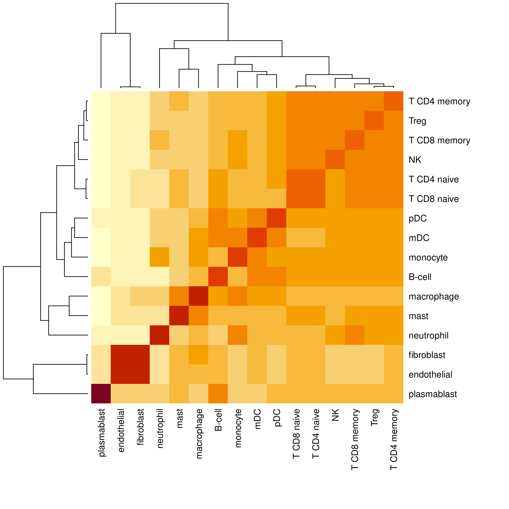

# Load libraries
library(InSituType)
library(InSituTree)
# Read in io profiles
data(ioprofiles)
head(ioprofiles)1 Introduction
We developed the InSituType (Danaher et al. 2022) algorithm to perform cell typing on spatial transcriptomics data, based on a likelihood model that weighs the evidence from every transcript, and this has been shown to work well for many datasets. However, when working with higher-plex datasets or attempting to perform fine-grained cell typing, we have found that a nested approach can generate more satisfactory results than the original implementation in some data sets. Here we provide a small package, InSituTree, that extends InSituType and provides a specialized application for its use. For more ideas and suggestions on cell typing, please see other cell typing posts on the Scratch Space blog and the FAQs provided with the InSituType package.
Like other items in our CosMx Analysis Scratch Space, the usual caveats and license apply.
2 InSituTree Overview: How does it work?
This package is an extension for the InSituType package and takes a nested approach to perform hierarchical supervised cell typing. Rather than immediately trying to assign cells to all subtypes available, it first starts by classifying cells into broad categories and then assigns cells to finer subtypes.
There are two core concepts that underlie this tree approach and differentiate it from the standard supervised InSituType:
- Hierarchical annotation Here, we break up the cell typing into a series of annotation decisions, starting at coarse cell type categories and proceeding down to fine categories
- Example: Immune -> Lymphoid -> T-cell -> T4 -> Treg
- Automatic feature selection The genes used for each decision point are optimized for maximum contrast given the cell types under consideration.
Aligned with these two core concepts, there are two additional types of input that need to be provided to the InSituTree function call beyond what is required for supervised InSituType:
cth: cell type hierarchy, a nested list object that describes the relationship between cell typesquantile_absolute_expression_difference_paramandquantile_percent_expression_difference_param: feature selection parameters based on reference profile expression of each gene at absolute level and percentile across the entire dataset.
3 InSituTree Example: Running the package
You can find the InSituTree package here. See the corresponding vignette inside the package for more details.
For this example we work with the immune-focused cell type profiles as well as the CosMx® spatial molecular imager (SMI) RNA non-small cell lung cancer dataset included in the InSituType package.
B-cell endothelial fibroblast macrophage mast mDC
FAM138A 2.096034e+01 0.000000 0.000000 0.0000000 0 1.390347e+01
OR4F5 4.585635e-04 0.000000 0.000000 0.0000000 0 4.959941e-04
RNU6-1100P 2.131342e-02 0.000000 0.000000 0.0000000 0 3.364625e-02
AC114498.1 4.585635e-04 0.000000 0.000000 0.0000000 0 4.959941e-04
RNU6-1199P 4.145011e-03 0.000000 0.000000 0.0000000 0 4.959941e-04
FAM87B 2.141077e+00 3.212228 2.771648 0.9166156 0 5.171742e+00
monocyte neutrophil NK pDC plasmablast
FAM138A 1.525272e+01 47.51214042 13.700490052 14.709188917 11.922652363
OR4F5 5.048288e-04 0.00107558 0.000374971 0.000468242 0.001279865
RNU6-1100P 2.395197e+01 333.72730875 0.000374971 0.028842730 0.432247095
AC114498.1 5.048288e-04 0.00107558 0.000374971 0.000468242 0.001279865
RNU6-1199P 5.048288e-04 0.00107558 0.000374971 0.007623073 0.001279865
FAM87B 2.316419e+00 2.68456642 2.033347728 4.161899008 1.184949893
T CD4 memory T CD4 naive T CD8 memory T CD8 naive Treg
FAM138A 1.494321e+01 1.122716e+01 5.3871876931 0.9259157510 1.354705e+01
OR4F5 4.071673e-04 4.089748e-04 0.0004038248 0.0004066689 3.847774e-04
RNU6-1100P 4.514122e-02 3.990783e-03 0.0203505401 0.0031968972 1.260998e-01
AC114498.1 6.060066e-04 4.089748e-04 0.0019765979 0.0004066689 3.847774e-04
RNU6-1199P 1.520570e-03 4.089748e-04 0.0010411853 0.0004066689 1.938572e-02
FAM87B 3.127699e+00 4.132383e+00 1.3184299727 3.6087853343 4.304584e+00We start by setting up a nested list of cell types, visualized with the helper function printTree(). The nested list should have names for major cell types (for example, “B-lymphoid” or “structural” below), and should include all cell types in the reference profile as endpoints (for example, “B-cell” or “endothelial” below). The endpoint cell types can be set as vectors instead of a list (see “NK” below which is set as an unnamed character vector of length 1), though setting them as lists will not cause errors.
# Establish a nested list of cell types
celltype_hierarchy_list <- list(
"structural" = c(
"endothelial",
"fibroblast"),
"myeloid" = c(
"macrophage",
"mast",
"mDC",
"monocyte",
"neutrophil"),
"lymphoid" = list(
"B-lymphoid" = c(
"B-cell",
"pDC",
"plasmablast"),
"T-lymphoid" = list(
"T4" = c(
"T CD4 memory",
"T CD4 naive",
"Treg"),
"T8" = c(
"T CD8 memory",
"T CD8 naive"),
"NK")
)
)
printTree(celltype_hierarchy_list, prefix = "|-")|- structural
|- endothelial
|- fibroblast
|- myeloid
|- macrophage
|- mast
|- mDC
|- monocyte
|- neutrophil
|- lymphoid
|- B-lymphoid
|- B-cell
|- pDC
|- plasmablast
|- T-lymphoid
|- T4
|- T CD4 memory
|- T CD4 naive
|- Treg
|- T8
|- T CD8 memory
|- T CD8 naive
|- NK Importantly, any middle nodes that have only a single child will act as end points for cell type assignments. See the example below:
# Example of a tree with a single child node
cth_single_child_node <- list(
"structural" = c(
"endothelial",
"fibroblast"),
"myeloid" = c(
"macrophage",
"monocyte"),
"lymphoid" = list( # This is a single child node: all cells annotated as
# lymphoid would also be 'B and T cells' and so annotations will not
# continue beyond this point.
"B and T cells" = list(
"B-lymphoid" = c(
"B-cell",
"pDC",
"plasmablast"),
"T-lymphoid" = list(
"T4" = c(
"T CD4 memory",
"T CD4 naive",
"Treg"),
"T8" = c(
"T CD8 memory",
"T CD8 naive"),
"NK")
)
)
)
printTree(cth_single_child_node, prefix = "|-")|- structural
|- endothelial
|- fibroblast
|- myeloid
|- macrophage
|- monocyte
|- lymphoid
|- B and T cells
|- B-lymphoid
|- B-cell
|- pDC
|- plasmablast
|- T-lymphoid
|- T4
|- T CD4 memory
|- T CD4 naive
|- Treg
|- T8
|- T CD8 memory
|- T CD8 naive
|- NK
Tip
If you’re working from a CosMx-derived cell profile from our CosMx Cell Profile library, formatted nested cell type lists are available as *celltypeslist.R files. Alternatively, if you’d like to create your own reference profile, see this Scratch Space Post for additional guidance on generating reference profiles.
To make your own cell type hierarchy, we recommend examining the similarity between end-point cell types within your reference profile as a starting point. After that, further adjust the hierarchy based on subject matter expertise. The cell type hierarchy should reflect similarity in gene expression, which may or may not correspond to cell type lineages. For a convenient way to visualize the similarity of cell types in your reference profile, use the function plotProfileSimilarity().
plotProfileSimilarity(ioprofiles)
As two examples from this heatmap, we can see that T cell subtypes as well as NK cells have high similarity and so should be grouped together. Additionally, endothelial and fibroblast cell types are highly similar, supporting our grouping of them into a ‘structural’ major cell type.
Once we have this cell type tree, we can use InSituTree to run supervised cell typing with a nested approach.
# Load basic data consisting of:
# - counts: cell x gene count matrix
# - negmeans: vector of mean negative probe counts per cell
load("mini_nsclc")
# Run InSituTree with basic options
res <- runInSituTree(
x = mini_nsclc$counts,
neg = rowMeans(mini_nsclc$neg),
full_profiles = ioprofiles,
cth = celltype_hierarchy_list,
cohort = NULL,
excluded_genes = NULL,
quantile_absolute_expression_difference_param = 0.5, # Include genes in the top 0.5 fraction in absolute expression differences
quantile_percent_expression_difference_param = 0.5, # Include genes in the top 0.5 fraction in percentage expression differences
return_summary_annotation = TRUE
)
# Access the final summarized cell typing results
head(res$summaryAnnotation, 10) annotLevel_1 probs_annotLevel_1 annotLevel_2 probs_annotLevel_2
c_3_18_2 myeloid 1.0000000 macrophage 0.7109515
c_3_18_3 myeloid 1.0000000 macrophage 0.9570978
c_3_18_4 myeloid 1.0000000 macrophage 1.0000000
c_3_18_5 myeloid 0.9999974 macrophage 0.8044057
c_3_18_6 structural 1.0000000 endothelial 1.0000000
c_3_18_7 myeloid 0.9999948 macrophage 0.9950331
c_3_18_10 structural 1.0000000 endothelial 1.0000000
c_3_18_11 lymphoid 0.9999996 B-lymphoid 1.0000000
c_3_18_12 structural 1.0000000 endothelial 0.9981063
c_3_18_19 lymphoid 1.0000000 B-lymphoid 1.0000000
annotLevel_3 probs_annotLevel_3 annotLevel_4 probs_annotLevel_4
c_3_18_2 macrophage 0.7109515 macrophage 0.7109515
c_3_18_3 macrophage 0.9570978 macrophage 0.9570978
c_3_18_4 macrophage 1.0000000 macrophage 1.0000000
c_3_18_5 macrophage 0.8044057 macrophage 0.8044057
c_3_18_6 endothelial 1.0000000 endothelial 1.0000000
c_3_18_7 macrophage 0.9950331 macrophage 0.9950331
c_3_18_10 endothelial 1.0000000 endothelial 1.0000000
c_3_18_11 B-cell 1.0000000 B-cell 1.0000000
c_3_18_12 endothelial 0.9981063 endothelial 0.9981063
c_3_18_19 plasmablast 1.0000000 plasmablast 1.0000000This summary annotation results data frame contains cell typing results at each level of annotation in separate columns, with both the cell type annotation and the posterior probability of that assignment among the cell types considered at a given branch. The final, most resolved, cell typing results will be found in the rightmost two columns. Cells which have no counts among the selected genes for the first level of annotations will appear with NA values for all columns. Otherwise, final annotations will be cascaded right in the summary table.
4 Additional recommendations
The structure of the cell type hierarchy list is a key determinant of how well this approach works. Major cell types that are unnecessarily broad may lead to poor cell typing if the average gene expression is too distinct from the expression of individual cells. The cell type lists available at our CosMx Cell Profile library often contain an initial grouping of cell types into ‘Tissue’ or ‘Immune’; we would recommend removing that large group and providing the next level down as top annotations. As an example, we here show the original liver cell type hierarchy on the left and on the right a refined version where the top broad groupings have been removed. For liver samples, we recommend using the refined version on the right.
4.1 Original hierachy
|- Tissue
|- Cholangiocyte
|- Stellate cell
|- Hepatocyte
|- Hepatocyte A
|- Hepatocyte B
|- Hepatocyte C
|- Hepatocyte D
|- Hepatocyte E
|- Endothelial cells
|- Portal endothelial cells
|- Periportal LSEC
|- Central venous LSEC
|- Immune
|- Lymphoid
|- B cell
|- NK like cells
|- T cell
|- T cell CD3 alpha beta
|- T cell gamma delta
|- Macrophage
|- Non-inflammatory macrophage
|- Inflammatory macrophage
|- Other
|- Erythroid 4.2 Refined hierarchy
|- Cholangiocyte
|- Stellate cell
|- Hepatocyte
|- Hepatocyte A
|- Hepatocyte B
|- Hepatocyte C
|- Hepatocyte D
|- Hepatocyte E
|- Endothelial cells
|- Portal endothelial cells
|- Periportal LSEC
|- Central venous LSEC
|- Lymphoid
|- B cell
|- NK like cells
|- T cell
|- T cell CD3 alpha beta
|- T cell gamma delta
|- Macrophage
|- Non-inflammatory macrophage
|- Inflammatory macrophage
|- Erythroid InSituTree runs quickly, so in cases of uncertainty we would recommend running the algorithm with multiple cell type hierarchies and choosing the one that gives the best cell typing. Evaluate the results as cell typing is typically evaluated, as described here: spatial distribution of cell types, top markers for each cell type, and clustering of similar cell types in UMAP space.
InSituTree is designed to work for fully supervised cell typing only. In datasets where you have novel cell types not captured in your reference profile, one option is to first run semi-supervised InSituType on your whole dataset to separate out novel cell types from the rest. Following this, you can create a reference profile from that semi-supervised cell typing result from the CosMx data and redo cell typing via InSituTree using the new reference profiles and a cell_type_hierachy list.
Another helpful use case for InSituTree is to do fine cell typing between closely related subtypes. For a dataset that has been through one iteration of cell typing, one could select out only cells of interest from the full dataset cell typing annotations, for example only the immune cells, and run targeted subclustering with InSituTree on those cells only.
5 Conclusions
The nested approach to supervised cell typing presented here adds another layer of control for cell typing, particularly useful when looking to identify fine cell subtypes. This approach is one of many, and users are encouraged to consider this tool in concert with other approaches including unsupervised clustering, gene smoothing, cell type refinement, and label transfer approaches.
6 Acknowledgements
The initial idea and code for this nested approach of InSituType-based cell typing were developed largely by Mark Gregory.
References
Danaher, Patrick, Edward Zhao, Zhi Yang, David Ross, Mark Gregory, Zach Reitz, Tae K. Kim, et al. 2022. “Insitutype: Likelihood-Based Cell Typing for Single Cell Spatial Transcriptomics.” bioRxiv. https://doi.org/10.1101/2022.10.19.512902.